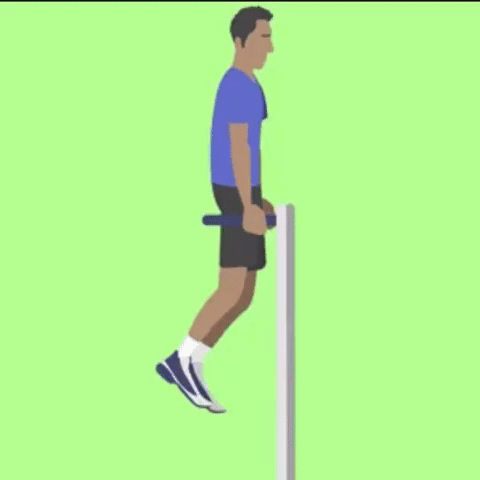
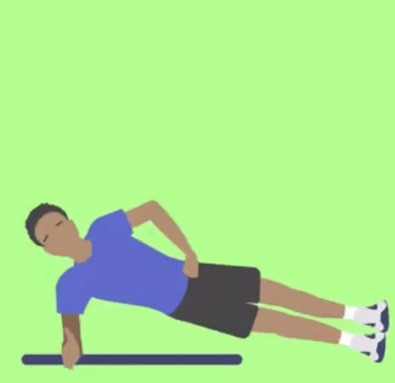
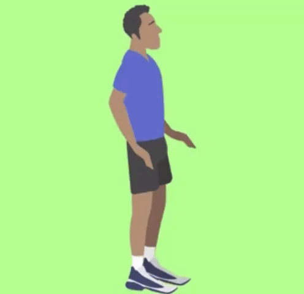

.png)
- Para praticar atividades físicas use roupas e calçados leves e confortáveis.

Nível de treinamento vigoroso
Dicas e Precauções
Roupa
Vá com calma
- Se estiver começando agora a prática de atividades vá aos poucos, sempre respeite os limites de seu corpo.
Hidrate-se
- A ingestão de liquido deve repor a quantidade de líquidos que está indo embora pela transpiração. Sempre leve sua garrafa com água para beber nos intervalos do treino.
Contra indicações
- Caso seja gestante, tenha se submetido a procedimentos cirúrgicos recentemente ou tenha algum problema de saúde como doenças cardiovasculares, diabetes, osteoporose, lesões musculoesquelética ou lesões nas articulações recomendamos que realize os exercícios apenas com o acompanhamento do profissional de educação física.
Aquecimento e Alongamento
- * Antes de iniciar qualquer exercício realize o alongamento e aquecimento do seu corpo para assim prepara-lo para receber os estímulos a seguir.
- High Knee Jacks: Inicialmente em pé, com os braços estendidos a cima da cabeça, comece o movimento elevando o joelho direito e abaixando os braços simultaneamente ao lado do corpo, retorne a posição inicial e repita o movimento elevando o joelho esquerdo;

- Lateral Steps: Inicialmente em pé, com as pernas afastadas na largura dos ombros e braços estendidos a frente do corpo. Inicie o movimento sustentando o peso do corpo na perna direita enquanto cruza a perna esquerda atrás da direita, cruze também os braços a frente do corpo. Retorne a posição inicial e repita o movimento para o outro lado;
- Corrida no lugar: Inicialmente em pé, eleve os joelhos até a altura do quadril alternadamente sem sair do lugar, simulando uma corrida leve;

- Polichinelo: Inicialmente em pé, com braços ao lado do corpo, de saltos no mesmo lugar com movimentos sincronizados, abre-se as pernas enquanto, simultaneamente, levanta-se os braços a cima da cabeça, em seguida com um novo pulo, fecha-se as pernas e os braços, retornando a posição inicial.

Exercícios
Tipo de exercicio: Aeróbico
Caminhada/Corrida
- Não exige habilidades especificas. Você pode iniciar caminhando determinada distancia e aumenta-la ao decorrer da semana, por exemplo, nos 3 primeiros dias caminhe por 3 km, depois aumente para 4 km, 5 km e assim sucessivamente ate atingir seu objetivo diário (Ex. 7 km por dia). Se for iniciar com a corrida comece com o trote e va introduzindo a corrida aos poucos.
- Benefícios: Melhora da circulação sanguínea diminuindo a pressão arterial, aumenta eficiência dos pulmões pois aumenta a troca gasosa isso faz com que uma quantidade maior de impurezas saia do pulmão, combate da osteoporose pois aumenta o estimulo elétrico que facilita a absorção de cálcio, combate a depressão pois é liberado maior quantidade do hormônio endorfina, emagrecer pois aumenta a demanda calórica, previne diabetes pois reverte a resistência à insulina;
- Músculos trabalhados: Esta atividade trabalha os músculos de forma geral.
Ciclismo
- Pedalar ajuda no fortalecimento muscular e perda de peso. Também é uma atividade que ajuda no alivio do estresse. Se a bike tiver regulagem de marcha você pode controlar a intensidade da atividade. Assim como a caminhada e a corrida, você pode definir determinada distancia e ir aumentando gradativamente até alcançar seu objetivo diário (Ex. de 6 a 10 km por dia).
- Benefícios: Pedalar acelera o metabolismo, ou seja, a queima de calorias será mais rápida, melhora da resistência muscular, proporciona o bem estar pois aumenta a liberação de endorfinas e serotoninas, aumento do folego e fortalecimento dos pulmões, tem baixo impacto nas articulações, reduz o colesterol queimando mais rapidamente o colesterol ruim.
- Importante: Sempre utilizar o equipamento de segurança (cotoveleiras, joelheiras, capacete e luvas).
- Músculos trabalhados: Esta atividade trabalha os músculos de forma geral
- Material: Bicicleta e equipamento de segurança.
Pular corda
- Esta atividade além de ser aeróbica te ajudará a ganhar e melhorar a coordenação motora.
É importante observar e controlar o amortecimento quando retorna ao chão.
Sempre mantenha os braços firmes e o abdômen contraído. Para este treinamento você pode variar a velocidade da rotação da corda e ajustar o tempo da atividade.
Para iniciantes pode começar pulando por 2 minutos e ir aumentando o tempo gradativamente, até alcançar seu objetivo diário (Ex. de 10 minutos por dia) - Benefícios: É uma atividade pratica e bastante completa que proporcionará tonificação da musculatura, melhora o condicionamento físico, queima calorias, desenvolve a coordenação motora, agilidade e equilíbrio e melhora a capacidade cardiorrespiratória.
- Músculos trabalhados: Esta atividade trabalha os músculos de forma geral.
- Material: Corda.
Patins
- Esta pratica irá ajudar a tonificar as pernas, panturrilhas e glúteos e também proporcionará o gasto de calorias. Além disso o passeio de patins pode proporcionar lazer e relaxamento.
- Importante: Sempre utilizar o equipamento de segurança (cotoveleiras, joelheiras, capacete e luvas).
- Benefícios: Por se tratar de uma atividade dinâmica requer que o músculos das coxas, panturrilhas, glúteos e abdômen. Também é um esporte de resistência isso estimula a queima de calorias e estimula todo o sistema cardiovascular, desenvolve os músculos do coração e melhora o fluxo sanguíneo, é um esporte de baixo impacto sendo menos traumático para as articulações, ajuda a desenvolver o senso de equilíbrio.
- Músculos trabalhados: Esta atividade trabalha os músculos de forma geral, mais intensamente o grupo muscular dos membros inferiores (perna, glúteos e panturrilhas).
- Material: Patins e equipamento de segurança.
Importância da Calistenia/Musculação
- A calistenia é a opção ideal para se adotar quando falamos de treinamentos em parques e ao ar livre pois é um conjunto de exercícios físicos onde se usa apenas o peso do próprio corpo. Procura movimentar grupos musculares grupos musculares de maneira natural sem utilização de halteres e similares. A calistenia desenvolve habilidades como força sobre o próprio corpo, equilíbrio, noção espacial e flexibilidade.
- O treinamento calistênico possui movimentos básicos que podem ser adaptados para qualquer nível de aptidão física, o que torna o método bem democrático.
Tipo de exercicio: Membros Inferiores (Realizar de 3 a 4 series com 12 repetições de cada exercício)
Avanço com Passada
- Em pé, de um passo a frente com a perna direita;
- Flexione os joelhos e agache, formando um ângulo de 90°, desça ate que o joelho da perna esquerda quase toque o chão;
- De um impulso com os dois pés e salte, trocando a posição das pernas;
- Aterrisse suavemente e agache-se imediatamente repetindo o movimento;
- Músculos trabalhados: Quadríceps, glúteos, panturrilhas e posterior da coxa.

Agachamento Isométrico
- Ereto, mantenha os pés afastados na largura do quadril e bem apoiados no chão;
- Estenda os braços a frente do corpo, mantenha as costas retas;
- Abaixe projetando o quadril para trás como se fosse se sentar até as coxas estarem paralelas ao chão;
- Mantenha essa posição por 30 segundos;
- Descanse e repita 3 vezes;
- Músculos trabalhados: Quadríceps, glúteos, panturrilhas e posterior da coxa.
Agachamento com Impulsão Vertical
- Ereto, mantenha os pés afastados na largura do quadril e bem apoiados no chão;
- Estenda os braços a frente do corpo, mantenha as costas retas;
- Inspire e inicie o agachamento soltando o ar, abaixe projetando o quadril para tras como se fosse se sentar até as coxas estarem paralelas ao chão;
- De um impulso com os dois pés e salte, balançando os braços para trás;
- Aterrisse suavemente e agache-se imediatamente repetindo o movimento;
- Músculos trabalhados: Quadríceps, glúteos, panturrilhas e posterior da coxa.

Tipo de exercicio: Membros Superiores (Realizar de 3 a 4 series com 12 repetições de cada exercício)
Barra fixa
- Pendure-se na barra com as mãos afastadas na largura dos ombros e as palmas viradas para a frente;
- Deixe as pernas cruzadas atrás do corpo;
- Contraia o abdômen, flexione os braços e suba até seu queixo ultrapassar a barra;
- Retorne devagar;
- Músculos trabalhados: Costas, bíceps e abdômen.

Barras paralelas
- Segure nas barras paralelas com a palma de uma mão voltada para a outra;
- Estenda os braços e erga o corpo (essa é a posição inicial);
- Erga os pés para trás;
- Contraia o abdômen, flexione os braços e desça o corpo devagar, até seus cotovelos formarem um ângulo de 90 graus;
- Retorne à posição inicial;
- Músculos trabalhados: Tríceps, ombros, abdome e peito (dependendo da inclinação do tronco).
- 
Pracha lateral
- Deite-se de lado no chão;
- Apoie o antebraço no chão, com o cotovelo abaixo da linha do ombro;
- Levante o corpo de forma que fique somente apoiado em seus pés e antebraço;
- Contraia o abdome e permaneça estático na posição;
- Faça a prancha lateral por 30 segundos a 1 minuto de cada lado. Isso é 1 repetição. Realize 3, com intervalo de 1 minuto entre elas.
- Músculos trabalhados: Abdominais, especialmente os oblíquos (na lateral da barriga).
- 
Burpee
- Fique em pé, com as pernas afastadas na largura do quadril e braços estendidos ao lado do corpo;
- Flexione os joelhos, agache e apoie as mãos no chão;
- Estenda as pernas para trás;
- Flexione os cotovelos e faça uma flexão de braços;
- Volte para a posição de agachamento, estenda as pernas e dê um salto, indo o mais alto que conseguir;
- Aterrisse já iniciando a próxima repetição. Procure executar a sequência de movimentos de forma contínua;
- Faça 3 séries de 10 a 12 repetições, com intervalo de 1 minuto entre elas. Se ficar muito difícil, não precisa dar o salto final.
- Músculos trabalhados: Coxas, glúteos, panturrilha, tríceps, peito, abdome, ombros e posterior da coxa;
- 